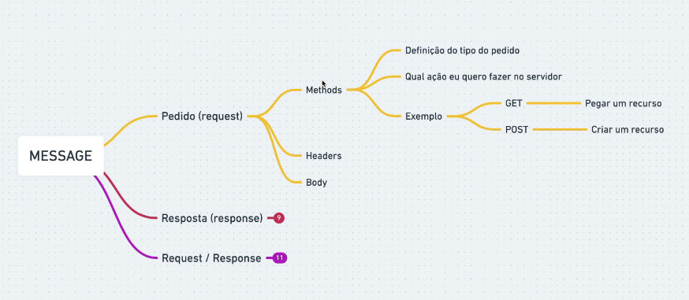

É uma troca de mensagens entre o Browser e o Servidor
Funciona atraves de uma Request e uma Response
Recurso: = um caminho onde estou indo pedir
Pedido: Todo pedido vai ter cabeçalho e corpo

Resposta:
200 - Pedido ok
301 - Redirecionamento
404 - Página não encontrada
500 - Erro interno de servidor
Body e Headers não são obrigatorios.
Header
Body vai ser tanto para envio quanto recebimento